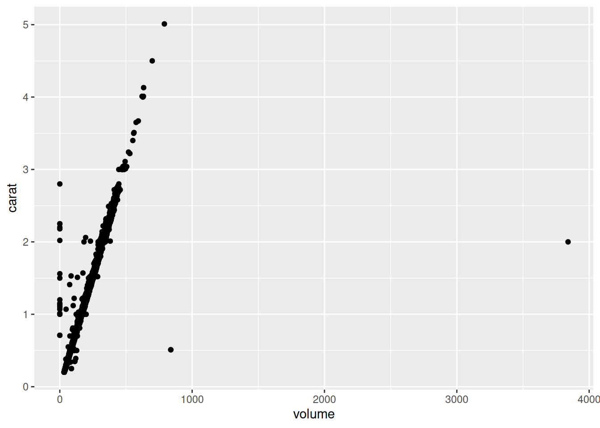

5.0.1 Welcome to this third module of the “Learn R From Scratch” training course.
In this module, we will cover:
How to select rows from a data table
How to select columns from a data table
How to add new variables to a data table
In this module, you will also learn how to use the Tidyverse package and the pipe operator: %>%
5.1 Introduction: The Tidyverse Package
The Tidyverse library marked a turning point in the history of R. This package, which actually combines several libraries designed to work together, changed the way people program in R. It shifted programming from a mainly functional style to a pipeline-based approach. It also introduced a set of highly useful functions for data manipulation. We will therefore begin by installing it. This may take a few minutes.
In addition, the ggplot2 package is required.
install.packages("tidyverse")
Installing package into '/home/bdu/R/x86_64-pc-linux-gnu-library/4.3'
(as 'lib' is unspecified)
── Conflicts ────────────────────────────────────────── tidyverse_conflicts() ──
✖ dplyr::filter() masks stats::filter()
✖ dplyr::lag() masks stats::lag()
ℹ Use the conflicted package (<http://conflicted.r-lib.org/>) to force all conflicts to become errors
library(ggplot2)
To practice data manipulation, we will use a dataset containing more than 50,000 rows, which would be difficult to manage in a traditional spreadsheet.
This is the diamonds dataset, whose characteristics can be explored as follows:
help("diamonds")
5.2 1 - Selecting Rows from a Data Table
This operation is also called filtering, because it consists of keeping only the rows that satisfy a logical condition. For example, let us consider the quality of the diamond cut: the cut variable.
The variable cut is a factor that classifies diamonds into five categories:
levels(diamonds$cut)
[1] "Fair" "Good" "Very Good" "Premium" "Ideal"
We can count the number of diamonds in each category using the table() function.
table(diamonds$cut)
Fair Good Very Good Premium Ideal
1610 4906 12082 13791 21551
To filter a dataset, we use the filter() function. The argument of this function is the logical condition to apply. For example:
cut == “Fair” keeps only diamonds with a Fair cut quality.
# Restrict the dataset to diamonds with a Fair cutdiamonds %>%filter(cut =="Fair", color =="E")
# A tibble: 224 × 10
carat cut color clarity depth table price x y z
<dbl> <ord> <ord> <ord> <dbl> <dbl> <int> <dbl> <dbl> <dbl>
1 0.22 Fair E VS2 65.1 61 337 3.87 3.78 2.49
2 0.86 Fair E SI2 55.1 69 2757 6.45 6.33 3.52
3 1.01 Fair E I1 64.5 58 2788 6.29 6.21 4.03
4 1.01 Fair E SI2 67.4 60 2797 6.19 6.05 4.13
5 0.57 Fair E VVS1 58.7 66 2805 5.34 5.43 3.16
6 0.96 Fair E SI2 53.1 63 2815 6.73 6.65 3.55
7 0.98 Fair E SI2 53.3 67 2855 6.82 6.74 3.61
8 1.01 Fair E SI2 67.6 57 2862 6.21 6.11 4.18
9 0.8 Fair E SI1 56.3 63 2885 6.22 6.14 3.48
10 0.71 Fair E VS2 64.6 59 2902 5.62 5.59 3.62
# ℹ 214 more rows
cut != “Fair” keeps only diamonds whose cut quality is not Fair.
# Restrict the dataset to diamonds whose cut is not Fairdiamonds %>%filter(cut !="Fair")
# A tibble: 52,330 × 10
carat cut color clarity depth table price x y z
<dbl> <ord> <ord> <ord> <dbl> <dbl> <int> <dbl> <dbl> <dbl>
1 0.23 Ideal E SI2 61.5 55 326 3.95 3.98 2.43
2 0.21 Premium E SI1 59.8 61 326 3.89 3.84 2.31
3 0.23 Good E VS1 56.9 65 327 4.05 4.07 2.31
4 0.29 Premium I VS2 62.4 58 334 4.2 4.23 2.63
5 0.31 Good J SI2 63.3 58 335 4.34 4.35 2.75
6 0.24 Very Good J VVS2 62.8 57 336 3.94 3.96 2.48
7 0.24 Very Good I VVS1 62.3 57 336 3.95 3.98 2.47
8 0.26 Very Good H SI1 61.9 55 337 4.07 4.11 2.53
9 0.23 Very Good H VS1 59.4 61 338 4 4.05 2.39
10 0.3 Good J SI1 64 55 339 4.25 4.28 2.73
# ℹ 52,320 more rows
cut %in% c(“Fair”,“Good”) keeps all diamonds in the Fair or Good categories.
# Restrict the dataset to diamonds with Fair or Good cutschoices <-c("Fair","Good","Ideal")diamonds %>%filter(cut %in% choices)
# A tibble: 28,067 × 10
carat cut color clarity depth table price x y z
<dbl> <ord> <ord> <ord> <dbl> <dbl> <int> <dbl> <dbl> <dbl>
1 0.23 Ideal E SI2 61.5 55 326 3.95 3.98 2.43
2 0.23 Good E VS1 56.9 65 327 4.05 4.07 2.31
3 0.31 Good J SI2 63.3 58 335 4.34 4.35 2.75
4 0.22 Fair E VS2 65.1 61 337 3.87 3.78 2.49
5 0.3 Good J SI1 64 55 339 4.25 4.28 2.73
6 0.23 Ideal J VS1 62.8 56 340 3.93 3.9 2.46
7 0.31 Ideal J SI2 62.2 54 344 4.35 4.37 2.71
8 0.3 Ideal I SI2 62 54 348 4.31 4.34 2.68
9 0.3 Good J SI1 63.4 54 351 4.23 4.29 2.7
10 0.3 Good J SI1 63.8 56 351 4.23 4.26 2.71
# ℹ 28,057 more rows
Along the way, you have encountered:
the pipe operator %>%
the %in% operator
the c() function
5.2.1 Practice Exercise
In your own words, describe what the following three R programming elements do:
The %>% operator passes the output of one function to the input of another function.
The %in% operator is a logical connector that tests membership in a set of elements.
The c() function creates a vector from the elements provided as arguments.
5.2.2 Application Exercise
A filter can be applied to any variable, even if it is not a factor. For example, we can filter a numerical variable.
Filter the diamonds dataset to keep only diamonds worth more than $15,000.
# Write your code here:diamonds %>%filter(price >15000)
# A tibble: 1,655 × 10
carat cut color clarity depth table price x y z
<dbl> <ord> <ord> <ord> <dbl> <dbl> <int> <dbl> <dbl> <dbl>
1 1.54 Premium E VS2 62.3 58 15002 7.31 7.39 4.58
2 1.19 Ideal F VVS1 61.5 55 15005 6.82 6.84 4.2
3 2.1 Premium I SI1 61.5 57 15007 8.25 8.21 5.06
4 1.69 Ideal D SI1 60.8 57 15011 7.69 7.71 4.68
5 1.5 Very Good G VVS2 62.9 56 15013 7.22 7.32 4.57
6 1.73 Very Good G VS1 62.8 57 15014 7.57 7.72 4.8
7 2.02 Premium G SI2 63 59 15014 8.05 7.95 5.03
8 2.05 Very Good F SI2 61.9 56 15017 8.13 8.18 5.05
9 1.5 Very Good F VS1 61.6 58 15022 7.35 7.43 4.55
10 1.82 Very Good G SI1 62.7 58 15025 7.68 7.75 4.84
# ℹ 1,645 more rows
How many diamonds have a price greater than $15,000?
5.3 2 - Selecting Columns from a Data Table
The Tidyverse package also provides a very useful function for selecting columns: select().
This function can be used to select:
One or more columns by name
All columns except one or more
All columns starting or ending with the same prefix or suffix
All columns containing a specific character string
etc. (see the function documentation for all available options)
Here are some examples:
5.3.1 Selecting a subset of columns by name
# Select the Cut, Clarity, and Price columnsdiamonds %>%select(cut, clarity, price)
# A tibble: 53,940 × 3
cut clarity price
<ord> <ord> <int>
1 Ideal SI2 326
2 Premium SI1 326
3 Good VS1 327
4 Premium VS2 334
5 Good SI2 335
6 Very Good VVS2 336
7 Very Good VVS1 336
8 Very Good SI1 337
9 Fair VS2 337
10 Very Good VS1 338
# ℹ 53,930 more rows
# Note: column names are not enclosed in quotation marks
5.3.2 Selecting all columns except specific ones
# Exclude the Cut, Clarity, and Price columns using the - operatordiamonds %>%select(-cut, -clarity, -price)
# A tibble: 53,940 × 7
carat color depth table x y z
<dbl> <ord> <dbl> <dbl> <dbl> <dbl> <dbl>
1 0.23 E 61.5 55 3.95 3.98 2.43
2 0.21 E 59.8 61 3.89 3.84 2.31
3 0.23 E 56.9 65 4.05 4.07 2.31
4 0.29 I 62.4 58 4.2 4.23 2.63
5 0.31 J 63.3 58 4.34 4.35 2.75
6 0.24 J 62.8 57 3.94 3.96 2.48
7 0.24 I 62.3 57 3.95 3.98 2.47
8 0.26 H 61.9 55 4.07 4.11 2.53
9 0.22 E 65.1 61 3.87 3.78 2.49
10 0.23 H 59.4 61 4 4.05 2.39
# ℹ 53,930 more rows
# Exclude the same columns using ! and c()diamonds %>%select(!c(cut, clarity, price))
# A tibble: 53,940 × 7
carat color depth table x y z
<dbl> <ord> <dbl> <dbl> <dbl> <dbl> <dbl>
1 0.23 E 61.5 55 3.95 3.98 2.43
2 0.21 E 59.8 61 3.89 3.84 2.31
3 0.23 E 56.9 65 4.05 4.07 2.31
4 0.29 I 62.4 58 4.2 4.23 2.63
5 0.31 J 63.3 58 4.34 4.35 2.75
6 0.24 J 62.8 57 3.94 3.96 2.48
7 0.24 I 62.3 57 3.95 3.98 2.47
8 0.26 H 61.9 55 4.07 4.11 2.53
9 0.22 E 65.1 61 3.87 3.78 2.49
10 0.23 H 59.4 61 4 4.05 2.39
# ℹ 53,930 more rows
5.3.3 Selecting all columns that start with a given string
# Select all columns whose names start with the letter "c"diamonds %>%select(starts_with("c"))
# A tibble: 53,940 × 4
carat cut color clarity
<dbl> <ord> <ord> <ord>
1 0.23 Ideal E SI2
2 0.21 Premium E SI1
3 0.23 Good E VS1
4 0.29 Premium I VS2
5 0.31 Good J SI2
6 0.24 Very Good J VVS2
7 0.24 Very Good I VVS1
8 0.26 Very Good H SI1
9 0.22 Fair E VS2
10 0.23 Very Good H VS1
# ℹ 53,930 more rows
5.3.4 Application Exercise
Using the diamonds dataset, create a table containing only the dimensions (x, y, and z) and the price of diamonds whose cut quality is Ideal.
# Write your code here:
What are the dimensions of this new dataset?
5.4 3 - Adding New Variables to a Data Table
In data analysis, it is common to compute intermediate variables, often called features in data mining. This is especially useful when several variables need to be combined to create a value that is more meaningful for analysis.
For example, the diamonds dataset provides the size of diamonds in three spatial dimensions (x, y, and z). Individually, these variables are of limited interest. However, they can be combined to obtain an estimate of diamond volume.
Our goal here is to calculate the estimated volume of each diamond and add this value to the dataset so that it can be used in later analyses. We use the mutate() function for this purpose.
# Add a volume column to the diamonds datasetdiamonds %>%mutate(volume = x * y * z)
# A tibble: 53,940 × 11
carat cut color clarity depth table price x y z volume
<dbl> <ord> <ord> <ord> <dbl> <dbl> <int> <dbl> <dbl> <dbl> <dbl>
1 0.23 Ideal E SI2 61.5 55 326 3.95 3.98 2.43 38.2
2 0.21 Premium E SI1 59.8 61 326 3.89 3.84 2.31 34.5
3 0.23 Good E VS1 56.9 65 327 4.05 4.07 2.31 38.1
4 0.29 Premium I VS2 62.4 58 334 4.2 4.23 2.63 46.7
5 0.31 Good J SI2 63.3 58 335 4.34 4.35 2.75 51.9
6 0.24 Very Good J VVS2 62.8 57 336 3.94 3.96 2.48 38.7
7 0.24 Very Good I VVS1 62.3 57 336 3.95 3.98 2.47 38.8
8 0.26 Very Good H SI1 61.9 55 337 4.07 4.11 2.53 42.3
9 0.22 Fair E VS2 65.1 61 337 3.87 3.78 2.49 36.4
10 0.23 Very Good H VS1 59.4 61 338 4 4.05 2.39 38.7
# ℹ 53,930 more rows
We can then use this new column in subsequent operations. For example, we can display diamond weight as a function of estimated volume.
# Scatter plot of diamond weight as a function of volumediamonds %>%mutate(volume = x * y * z) %>%ggplot() +geom_point(aes(x = volume, y = carat))

Does anything surprise you about the resulting graph? What do you think explains it?
5.4.1 Application Exercise
Using the diamonds dataset:
Calculate the estimated volume of each diamond from its dimensions x, y, and z.
Filter out diamonds with a volume smaller than 10 mm³ or larger than 1000 mm³.
Visualize diamond price (price) as a function of volume.
Map the color of the points to diamond clarity (clarity).
# Write your code here:
Which level of diamond clarity appears to be most valued by buyers?
Propose a clearer visualization to illustrate this trend using the histogram geometry introduced in the previous module.